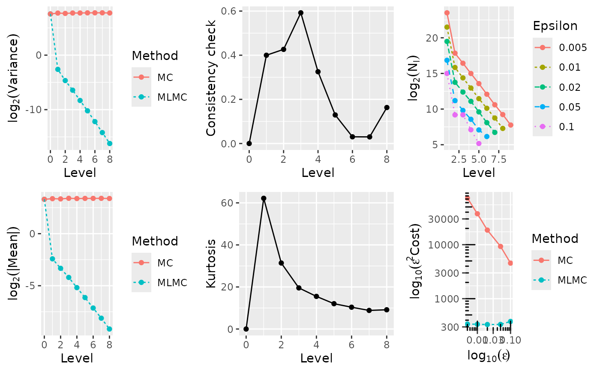
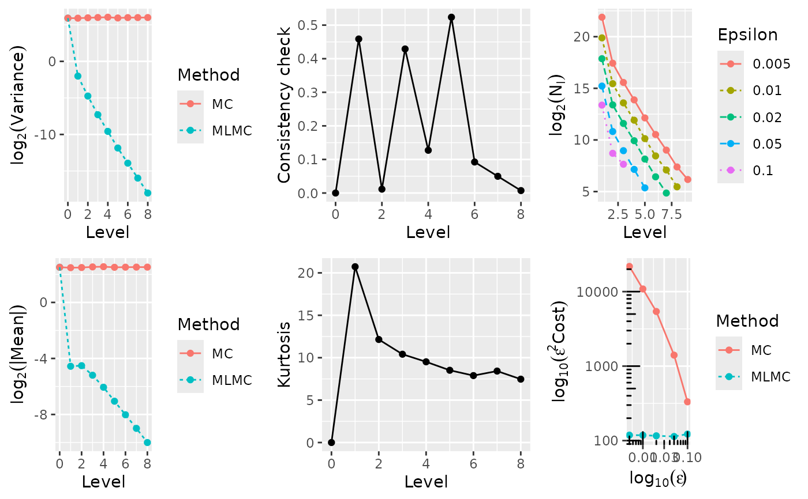
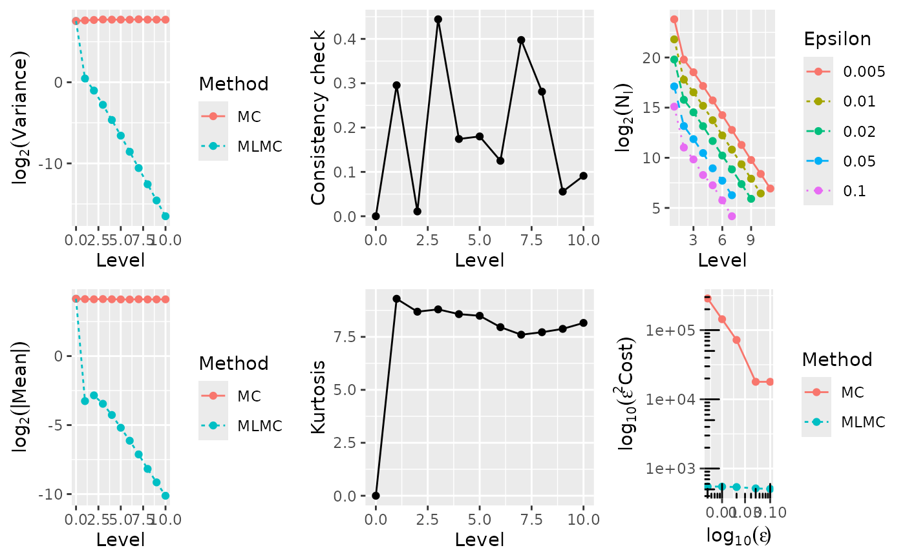
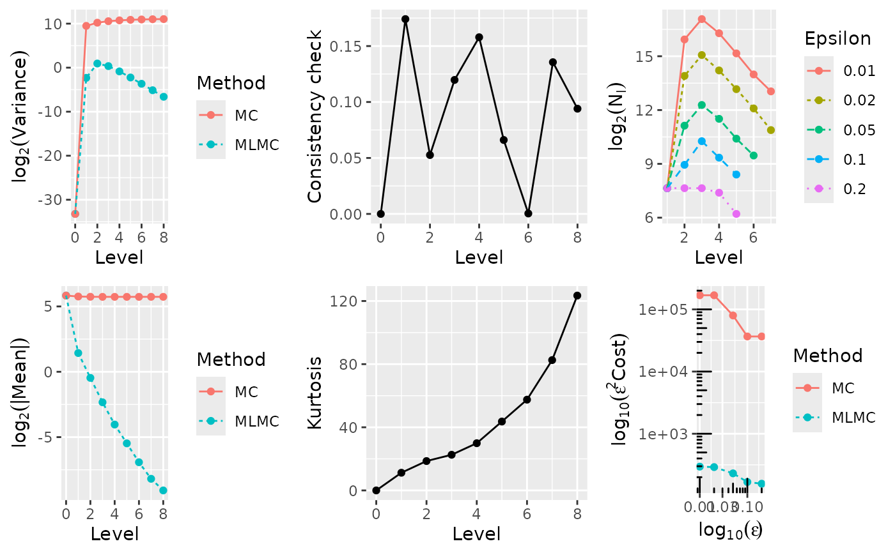
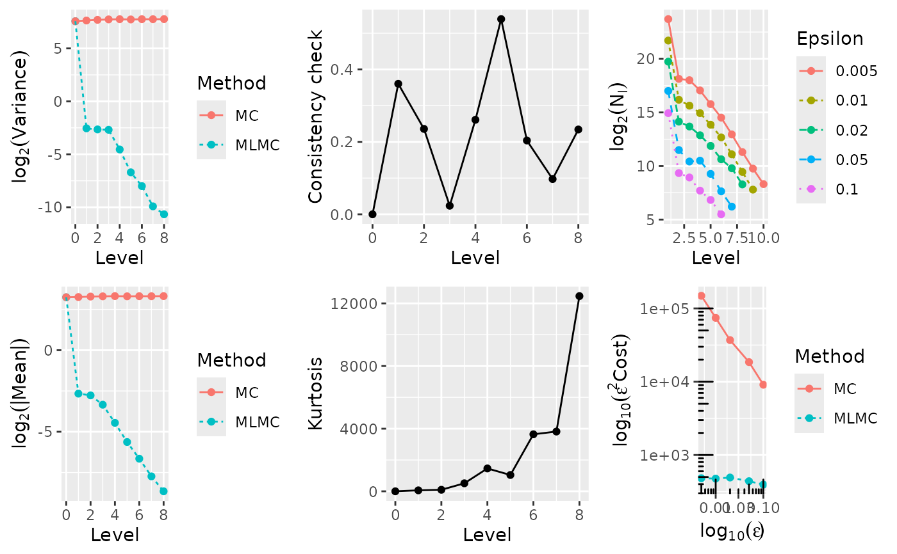

Financial options based on scalar geometric Brownian motion, similar to Mike Giles' MCQMC06 paper, Giles (2008), using a Milstein discretisation.
Value
A named list containing:
sumsis a vector of length six \(\left(\sum Y_i, \sum Y_i^2, \sum Y_i^3, \sum Y_i^4, \sum X_i, \sum X_i^2\right)\) where \(Y_i\) are iid simulations with expectation \(E[P_0]\) when \(l=0\) and expectation \(E[P_l-P_{l-1}]\) when \(l>0\), and \(X_i\) are iid simulations with expectation \(E[P_l]\). Note that only the first two components of this are used by the main
mlmc()driver, the full vector is used bymlmc.test()for convergence tests etc;costis a scalar with the total cost of the paths simulated, computed as \(N \times 2^l\) for level \(l\).
References
Giles, M. (2008) 'Improved Multilevel Monte Carlo Convergence using the Milstein Scheme', in A. Keller, S. Heinrich, and H. Niederreiter (eds) Monte Carlo and Quasi-Monte Carlo Methods 2006. Berlin, Heidelberg: Springer, pp. 343–358. Available at: doi:10.1007/978-3-540-74496-2_20 .
Examples
# \donttest{
# These are similar to the MLMC tests for the MCQMC06 paper
# using a Milstein discretisation with 2^l timesteps on level l
#
# The figures are slightly different due to:
# -- change in MSE split
# -- change in cost calculation
# -- different random number generation
# -- switch to S_0=100
#
# Note the following takes quite a while to run, for a toy example see after
# this block.
N0 <- 200 # initial samples on coarse levels
Lmin <- 2 # minimum refinement level
Lmax <- 10 # maximum refinement level
test.res <- list()
for(option in 1:5) {
if(option == 1) {
cat("\n ---- Computing European call ---- \n")
N <- 20000 # samples for convergence tests
L <- 8 # levels for convergence tests
Eps <- c(0.005, 0.01, 0.02, 0.05, 0.1)
} else if(option == 2) {
cat("\n ---- Computing Asian call ---- \n")
N <- 20000 # samples for convergence tests
L <- 8 # levels for convergence tests
Eps <- c(0.005, 0.01, 0.02, 0.05, 0.1)
} else if(option == 3) {
cat("\n ---- Computing lookback call ---- \n")
N <- 20000 # samples for convergence tests
L <- 10 # levels for convergence tests
Eps <- c(0.005, 0.01, 0.02, 0.05, 0.1)
} else if(option == 4) {
cat("\n ---- Computing digital call ---- \n")
N <- 200000 # samples for convergence tests
L <- 8 # levels for convergence tests
Eps <- c(0.01, 0.02, 0.05, 0.1, 0.2)
} else if(option == 5) {
cat("\n ---- Computing barrier call ---- \n")
N <- 200000 # samples for convergence tests
L <- 8 # levels for convergence tests
Eps <- c(0.005, 0.01, 0.02, 0.05, 0.1)
}
test.res[[option]] <- mlmc.test(mcqmc06_l, N, L, N0, Eps, Lmin, Lmax, option = option)
# print exact analytic value, based on S0=K
T <- 1
r <- 0.05
sig <- 0.2
K <- 100
B <- 0.85*K
k <- 0.5*sig^2/r;
d1 <- (r+0.5*sig^2)*T / (sig*sqrt(T))
d2 <- (r-0.5*sig^2)*T / (sig*sqrt(T))
d3 <- (2*log(B/K) + (r+0.5*sig^2)*T) / (sig*sqrt(T))
d4 <- (2*log(B/K) + (r-0.5*sig^2)*T) / (sig*sqrt(T))
if(option == 1) {
val <- K*( pnorm(d1) - exp(-r*T)*pnorm(d2) )
} else if(option == 2) {
val <- NA
} else if(option == 3) {
val <- K*( pnorm(d1) - pnorm(-d1)*k - exp(-r*T)*(pnorm(d2) - pnorm(d2)*k) )
} else if(option == 4) {
val <- K*exp(-r*T)*pnorm(d2)
} else if(option == 5) {
val <- K*( pnorm(d1) - exp(-r*T)*pnorm(d2) -
((K/B)^(1-1/k))*((B^2)/(K^2)*pnorm(d3) - exp(-r*T)*pnorm(d4)) )
}
if(is.na(val)) {
cat(sprintf("\n Exact value unknown, MLMC value: %f \n", test.res[[option]]$P[1]))
} else {
cat(sprintf("\n Exact value: %f, MLMC value: %f \n", val, test.res[[option]]$P[1]))
}
# plot results
plot(test.res[[option]])
}
#>
#> ---- Computing European call ----
#>
#> **********************************************************
#> *** Convergence tests, kurtosis, telescoping sum check ***
#> *** using N = 20000 samples ***
#> **********************************************************
#>
#> l ave(Pf-Pc) ave(Pf) var(Pf-Pc) var(Pf) kurtosis check cost
#> ---------------------------------------------------------------------------------------
#> 0 9.8621e+00 9.8621e+00 1.8967e+02 1.8967e+02 0.0000e+00 0.0000e+00 1.0000e+00
#> 1 1.8731e-01 1.0293e+01 1.6435e-01 2.1123e+02 6.2177e+01 3.9988e-01 2.0000e+00
#> 2 9.9564e-02 1.0130e+01 3.9577e-02 2.0239e+02 3.1392e+01 4.2651e-01 4.0000e+00
#> 3 5.4312e-02 1.0548e+01 1.1598e-02 2.1278e+02 1.9553e+01 5.9222e-01 8.0000e+00
#> 4 2.7522e-02 1.0374e+01 3.1369e-03 2.1338e+02 1.5519e+01 3.2524e-01 1.6000e+01
#> 5 1.4201e-02 1.0469e+01 8.4392e-04 2.1734e+02 1.2047e+01 1.2939e-01 3.2000e+01
#> 6 7.0778e-03 1.0495e+01 2.1334e-04 2.1812e+02 1.0373e+01 3.0445e-02 6.4000e+01
#> 7 3.5960e-03 1.0517e+01 5.2873e-05 2.1896e+02 8.8415e+00 2.9952e-02 1.2800e+02
#> 8 1.7492e-03 1.0417e+01 1.3131e-05 2.1367e+02 9.1523e+00 1.6309e-01 2.5600e+02
#>
#> ******************************************************
#> *** Linear regression estimates of MLMC parameters ***
#> ******************************************************
#>
#> alpha = 0.963428 (exponent for MLMC weak convergence)
#> beta = 1.931049 (exponent for MLMC variance)
#> gamma = 1.000000 (exponent for MLMC cost)
#>
#> *****************************
#> *** MLMC complexity tests ***
#> *****************************
#>
#> eps value mlmc_cost std_cost savings N_l
#> -----------------------------------------------------------
#> 0.0050 1.0456e+01 1.355e+07 2.917e+09 215.24 11904335 234850 88192 32601 12180 4344 1560 601 217
#> 0.0100 1.0458e+01 3.357e+06 3.737e+08 111.30 2963610 58570 21252 7941 2825 1108 430 156
#> 0.0200 1.0430e+01 8.306e+05 4.653e+07 56.02 736094 13838 5369 2175 777 274 106
#> 0.0500 1.0398e+01 1.335e+05 3.709e+06 27.79 117726 2338 898 379 135 71
#> 0.1000 1.0423e+01 3.786e+04 4.552e+05 12.02 32693 582 584 137 36
#>
#>
#> Exact value: 10.450584, MLMC value: 10.455512
#> Warning: `aes_string()` was deprecated in ggplot2 3.0.0.
#> ℹ Please use tidy evaluation idioms with `aes()`.
#> ℹ See also `vignette("ggplot2-in-packages")` for more information.
#> ℹ The deprecated feature was likely used in the mlmc package.
#> Please report the issue at <https://github.com/louisaslett/mlmc/issues>.

#>
#> ---- Computing Asian call ----
#>
#> **********************************************************
#> *** Convergence tests, kurtosis, telescoping sum check ***
#> *** using N = 20000 samples ***
#> **********************************************************
#>
#> l ave(Pf-Pc) ave(Pf) var(Pf-Pc) var(Pf) kurtosis check cost
#> ---------------------------------------------------------------------------------------
#> 0 5.7010e+00 5.7010e+00 6.0201e+01 6.0201e+01 0.0000e+00 0.0000e+00 1.0000e+00
#> 1 4.2435e-02 5.5876e+00 2.4703e-01 6.0087e+01 2.0726e+01 4.5873e-01 2.0000e+00
#> 2 4.3717e-02 5.6275e+00 3.7233e-02 6.2216e+01 1.2147e+01 1.1534e-02 4.0000e+00
#> 3 2.7244e-02 5.8000e+00 6.3460e-03 6.3999e+01 1.0408e+01 4.2903e-01 8.0000e+00
#> 4 1.5017e-02 5.8586e+00 1.3057e-03 6.5835e+01 9.5158e+00 1.2729e-01 1.6000e+01
#> 5 7.5291e-03 5.6889e+00 2.7000e-04 6.1279e+01 8.5182e+00 5.2357e-01 3.2000e+01
#> 6 3.8502e-03 5.7237e+00 6.4089e-05 6.3427e+01 7.8921e+00 9.2394e-02 6.4000e+01
#> 7 1.9628e-03 5.7426e+00 1.5535e-05 6.3610e+01 8.4240e+00 4.9808e-02 1.2800e+02
#> 8 9.7364e-04 5.7411e+00 3.7740e-06 6.3837e+01 7.4698e+00 7.3195e-03 2.5600e+02
#>
#> ******************************************************
#> *** Linear regression estimates of MLMC parameters ***
#> ******************************************************
#>
#> alpha = 0.832987 (exponent for MLMC weak convergence)
#> beta = 2.265294 (exponent for MLMC variance)
#> gamma = 1.000000 (exponent for MLMC cost)
#>
#> *****************************
#> *** MLMC complexity tests ***
#> *****************************
#>
#> eps value mlmc_cost std_cost savings N_l
#> -----------------------------------------------------------
#> 0.0050 5.7646e+00 4.736e+06 8.716e+08 184.05 3875143 176767 48585 15089 4492 1475 517 167 72
#> 0.0100 5.7706e+00 1.181e+06 1.086e+08 91.89 968448 44745 12316 3853 1119 350 136 44
#> 0.0200 5.7503e+00 2.901e+05 1.353e+07 46.64 239309 10768 3093 972 284 86 29
#> 0.0500 5.7476e+00 4.546e+04 5.618e+05 12.36 38071 1802 498 142 41
#> 0.1000 5.7427e+00 1.224e+04 3.318e+04 2.71 10606 417 200
#>
#>
#> Exact value unknown, MLMC value: 5.764626

#>
#> ---- Computing lookback call ----
#>
#> **********************************************************
#> *** Convergence tests, kurtosis, telescoping sum check ***
#> *** using N = 20000 samples ***
#> **********************************************************
#>
#> l ave(Pf-Pc) ave(Pf) var(Pf-Pc) var(Pf) kurtosis check cost
#> ---------------------------------------------------------------------------------------
#> 0 1.7768e+01 1.7768e+01 1.8712e+02 1.8712e+02 0.0000e+00 0.0000e+00 1.0000e+00
#> 1 -1.0426e-01 1.7483e+01 1.3782e+00 1.9718e+02 9.2985e+00 2.9547e-01 2.0000e+00
#> 2 -1.3906e-01 1.7337e+01 4.9175e-01 2.0451e+02 8.6885e+00 1.0867e-02 4.0000e+00
#> 3 -9.1029e-02 1.7522e+01 1.4555e-01 2.1312e+02 8.7984e+00 4.4423e-01 8.0000e+00
#> 4 -5.1926e-02 1.7361e+01 3.9791e-02 2.1047e+02 8.5741e+00 1.7423e-01 1.6000e+01
#> 5 -2.7357e-02 1.7223e+01 1.0464e-02 2.1053e+02 8.4960e+00 1.8001e-01 3.2000e+01
#> 6 -1.4250e-02 1.7132e+01 2.6396e-03 2.0979e+02 7.9592e+00 1.2507e-01 6.4000e+01
#> 7 -7.1702e-03 1.7371e+01 6.5759e-04 2.1698e+02 7.6029e+00 3.9748e-01 1.2800e+02
#> 8 -3.4636e-03 1.7193e+01 1.6408e-04 2.1101e+02 7.7202e+00 2.8102e-01 2.5600e+02
#> 9 -1.7591e-03 1.7226e+01 4.1235e-05 2.1033e+02 7.8779e+00 5.5572e-02 5.1200e+02
#> 10 -8.9897e-04 1.7281e+01 1.0699e-05 2.0982e+02 8.1592e+00 9.1104e-02 1.0240e+03
#>
#> ******************************************************
#> *** Linear regression estimates of MLMC parameters ***
#> ******************************************************
#>
#> alpha = 0.842076 (exponent for MLMC weak convergence)
#> beta = 1.916819 (exponent for MLMC variance)
#> gamma = 1.000000 (exponent for MLMC cost)
#>
#> *****************************
#> *** MLMC complexity tests ***
#> *****************************
#>
#> eps value mlmc_cost std_cost savings N_l
#> -----------------------------------------------------------
#> 0.0050 1.7214e+01 2.198e+07 1.146e+10 521.25 14707962 907905 378628 146281 54022 19505 6993 2486 878 335 122
#> 0.0100 1.7204e+01 5.477e+06 1.436e+09 262.13 3670180 226909 94576 37118 13720 4810 1800 651 241 87
#> 0.0200 1.7230e+01 1.349e+06 1.801e+08 133.44 912323 56408 23757 9098 3264 1194 459 166 60
#> 0.0500 1.7254e+01 2.066e+05 7.161e+06 34.67 142386 9192 3724 1419 494 210 77
#> 0.1000 1.7106e+01 5.067e+04 1.790e+06 35.33 35042 2080 914 311 153 54 18
#>
#>
#> Exact value: 17.216802, MLMC value: 17.213892

#>
#> ---- Computing digital call ----
#>
#> **********************************************************
#> *** Convergence tests, kurtosis, telescoping sum check ***
#> *** using N = 2e+05 samples ***
#> **********************************************************
#>
#> l ave(Pf-Pc) ave(Pf) var(Pf-Pc) var(Pf) kurtosis check cost
#> ---------------------------------------------------------------------------------------
#> 0 5.6951e+01 5.6951e+01 1.0000e-10 1.0000e-10 0.0000e+00 0.0000e+00 1.0000e+00
#> 1 -2.7023e+00 5.4217e+01 2.0133e-01 7.2126e+02 1.1201e+01 1.7411e-01 2.0000e+00
#> 2 -7.2392e-01 5.3470e+01 1.9232e+00 1.1909e+03 1.8604e+01 5.2613e-02 4.0000e+00
#> 3 -1.9816e-01 5.3213e+01 1.2802e+00 1.5041e+03 2.2584e+01 1.1973e-01 8.0000e+00
#> 4 -6.0912e-02 5.3237e+01 5.5631e-01 1.7193e+03 2.9910e+01 1.5789e-01 1.6000e+01
#> 5 -2.2460e-02 5.3253e+01 2.1308e-01 1.8709e+03 4.3637e+01 6.6073e-02 3.2000e+01
#> 6 -8.2487e-03 5.3245e+01 7.9205e-02 1.9772e+03 5.7498e+01 3.9326e-04 6.4000e+01
#> 7 -3.4277e-03 5.3323e+01 2.8676e-02 2.0515e+03 8.2570e+01 1.3559e-01 1.2800e+02
#> 8 -1.8502e-03 5.3264e+01 1.0224e-02 2.1032e+03 1.2344e+02 9.4022e-02 2.5600e+02
#>
#> WARNING: kurtosis on finest level = 123.443667
#> indicates MLMC correction dominated by a few rare paths;
#> for information on the connection to variance of sample variances,
#> see http://mathworld.wolfram.com/SampleVarianceDistribution.html
#>
#>
#> ******************************************************
#> *** Linear regression estimates of MLMC parameters ***
#> ******************************************************
#>
#> alpha = 1.516625 (exponent for MLMC weak convergence)
#> beta = 0.879322 (exponent for MLMC variance)
#> gamma = 1.000000 (exponent for MLMC cost)
#>
#> *****************************
#> *** MLMC complexity tests ***
#> *****************************
#>
#> eps value mlmc_cost std_cost savings N_l
#> -----------------------------------------------------------
#> 0.0100 5.3237e+01 2.958e+06 1.687e+09 570.48 200 62712 137728 79661 36562 16223 8431
#> 0.0200 5.3235e+01 7.270e+05 4.218e+08 580.19 200 15332 34325 18933 9187 4361 1888
#> 0.0500 5.3308e+01 9.227e+04 3.193e+07 346.04 200 2241 4984 2917 1356 707
#> 0.1000 5.3249e+01 1.674e+04 3.668e+06 219.13 200 493 1230 651 339
#> 0.2000 5.3005e+01 3.928e+03 9.170e+05 233.44 200 200 200 168 74
#>
#>
#> Exact value: 53.232482, MLMC value: 53.236831

#>
#> ---- Computing barrier call ----
#>
#> **********************************************************
#> *** Convergence tests, kurtosis, telescoping sum check ***
#> *** using N = 2e+05 samples ***
#> **********************************************************
#>
#> l ave(Pf-Pc) ave(Pf) var(Pf-Pc) var(Pf) kurtosis check cost
#> ---------------------------------------------------------------------------------------
#> 0 9.4830e+00 9.4830e+00 1.8942e+02 1.8942e+02 0.0000e+00 0.0000e+00 1.0000e+00
#> 1 1.5785e-01 9.5725e+00 1.7113e-01 1.9862e+02 6.1470e+01 3.6032e-01 2.0000e+00
#> 2 1.4648e-01 9.7647e+00 1.5937e-01 2.0755e+02 9.7154e+01 2.3578e-01 4.0000e+00
#> 3 9.8585e-02 9.8586e+00 1.5545e-01 2.1371e+02 5.1188e+02 2.3640e-02 8.0000e+00
#> 4 4.5593e-02 9.9559e+00 4.2893e-02 2.1657e+02 1.4600e+03 2.6099e-01 1.6000e+01
#> 5 2.0180e-02 9.8698e+00 9.5994e-03 2.1301e+02 1.0424e+03 5.3892e-01 3.2000e+01
#> 6 9.9487e-03 9.9199e+00 3.9020e-03 2.1678e+02 3.6408e+03 2.0377e-01 6.4000e+01
#> 7 4.6928e-03 9.9054e+00 1.0343e-03 2.1659e+02 3.8162e+03 9.7295e-02 1.2800e+02
#> 8 2.4859e-03 9.9542e+00 6.1507e-04 2.1772e+02 1.2465e+04 2.3417e-01 2.5600e+02
#>
#> WARNING: kurtosis on finest level = 12464.747936
#> indicates MLMC correction dominated by a few rare paths;
#> for information on the connection to variance of sample variances,
#> see http://mathworld.wolfram.com/SampleVarianceDistribution.html
#>
#>
#> ******************************************************
#> *** Linear regression estimates of MLMC parameters ***
#> ******************************************************
#>
#> alpha = 0.926708 (exponent for MLMC weak convergence)
#> beta = 1.324839 (exponent for MLMC variance)
#> gamma = 1.000000 (exponent for MLMC cost)
#>
#> *****************************
#> *** MLMC complexity tests ***
#> *****************************
#>
#> eps value mlmc_cost std_cost savings N_l
#> -----------------------------------------------------------
#> 0.0050 9.9440e+00 1.928e+07 5.945e+09 308.33 13703707 287810 264218 135944 56043 23420 7903 2522 865 317
#> 0.0100 9.9540e+00 4.762e+06 7.432e+08 156.07 3427776 74322 50751 31315 14814 6527 2183 697 222
#> 0.0200 9.9743e+00 1.232e+06 9.241e+07 75.03 875526 18057 13185 7477 3766 1582 886 311
#> 0.0500 9.9433e+00 1.756e+05 7.399e+06 42.14 131832 2874 1370 1447 615 199 74
#> 0.1000 9.9764e+00 3.946e+04 9.088e+05 23.03 31284 647 488 208 114 45
#>
#>
#> Exact value: 9.949270, MLMC value: 9.943997

# }
# The level sampler can be called directly to retrieve the relevant level sums:
mcqmc06_l(l = 7, N = 10, option = 1)
#> $sums
#> [1] 3.136764e-02 4.114890e-04 6.342174e-06 1.056774e-07 9.296259e+01
#> [6] 2.875541e+03
#>
#> $cost
#> [1] 1280
#>